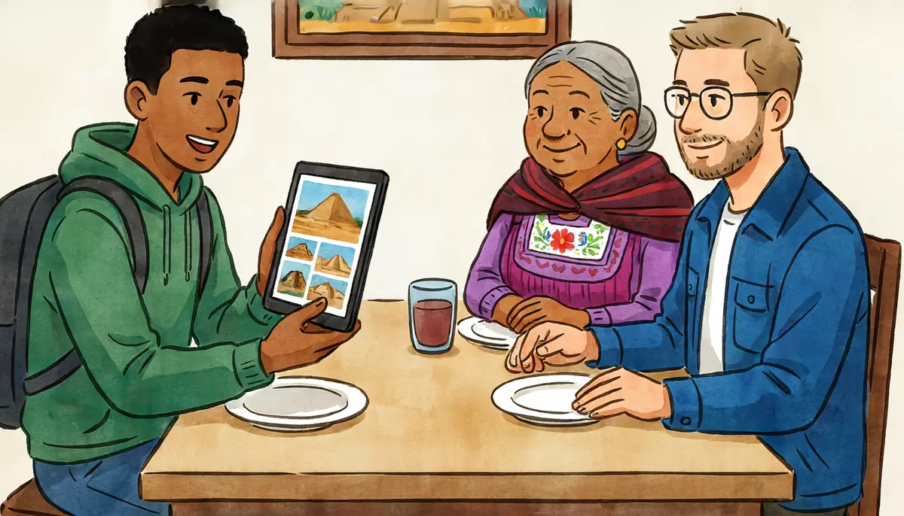

I can tell a short story about a past trip.Goal of this lesson · CEFR Sustained monologue: describing experience A2+; Overall oral comprehension A2
Paso 1 de 8
EscuchaListen
Listen to the conversation, then answer the questions.

Sunday dinner at Doña Lupita's. Diego finally shows his grandmother and Alex the photos from his university trip to the Yucatán peninsula (remember his postcard from Mérida?). tú (Doña Lupita to Diego and Alex; Diego and Alex) · Alex says usted to Doña Lupita
First listen without the text. Press Escuchar todo and answer the first question. Then show the Spanish text and listen again.
ChooseFor Diego, what was the best part of the trip?
Your answer:
L
Doña LupitaA ver, mijo, enséñanos las fotos de Yucatán. ¿Cómo te fue?Come on, sweetheart, show us the photos from the Yucatán. How did it go?
D
Diego¡Increíble, abuela! Éramos veinte estudiantes y dos maestros. Primero llegamos a Mérida.Amazing, Grandma! There were twenty of us students and two teachers. First we got to Mérida.
A
Alex¿Hacía mucho calor? En tu postal decías que hacía treinta y seis grados.Was it very hot? In your postcard you said it was thirty-six degrees.
D
Diego¡Uf, sí! Hacía un calor horrible y en las tardes casi siempre llovía. Pero las noches eran muy agradables.Phew, yes! It was horribly hot and in the afternoons it almost always rained. But the evenings were really pleasant.
L
Doña Lupita¿Y qué hacían todos los días?And what did you do every day?
D
DiegoCada mañana íbamos a una zona arqueológica diferente. Miren, esta es Uxmal. ¡Había iguanas por todos lados!Every morning we went to a different archaeological site. Look, this is Uxmal. There were iguanas everywhere!
A
Alex¡Qué padre! ¿Y fueron a Chichén Itzá?How cool! And did you go to Chichén Itzá?
D
DiegoSí, un día fuimos. Era muy bonito, pero había muchísima gente. ¡Casi no veíamos la pirámide!Yes, one day we went. It was really beautiful, but there were tons of people. We could hardly see the pyramid!
L
Doña Lupita¿Y el cenote? ¿Nadaste?And the cenote? Did you swim?
D
Diego¡Claro! Eso fue lo mejor del viaje. El agua era clarísima y estaba muy fresca.Of course! That was the best part of the trip. The water was crystal clear and really cool.
D
DiegoYo nadaba muy tranquilo y, de repente, vi un pez enorme junto a mi pie. ¡Y grité!I was swimming along very calmly and suddenly I saw a huge fish next to my foot. And I screamed!
A
Alex¡Ja, ja! ¿Y entonces?Ha ha! And then?
D
DiegoEntonces todos mis amigos me vieron… ¡y era un pececito de diez centímetros! Todos se rieron de mí.Then all my friends looked at me… and it was a tiny ten-centimeter fish! Everybody laughed at me.
L
Doña Lupita¡Ay, mijo! ¿Y qué comían allá? ¿Cochinita pibil?Oh, sweetheart! And what did you eat there? Cochinita pibil?
D
DiegoSí, casi todos los días. Y al final, el último día, comimos panuchos en el mercado de Mérida. ¡Pero nada de mariscos, eh!Yes, almost every day. And in the end, on the last day, we ate panuchos at the market in Mérida. But no seafood, OK!
A
Alex¡Qué buen viaje! Yo también quiero ir a Yucatán.What a great trip! I want to go to the Yucatán too.
1
ChooseListen again and answer.
What was the weather like in Mérida?
What was the problem at Chichén Itzá?
What happened in the cenote?
¿Y tú, Alex?: Alex's Saturday in Xochimilco
Then Doña Lupita asks Alex about his first outing to Xochimilco, with Mariana and her friends, in his second month in Mexico City.
L
Doña LupitaY tú, Alex, ¿cómo fue tu primer paseo en Xochimilco? ¿Te acuerdas?And you, Alex, how was your first outing to Xochimilco? Do you remember?
A
Alex¡Claro! Era mi segundo mes en México. Era sábado y hacía fresco. Había muchísimas trajineras de colores.Of course! It was my second month in Mexico. It was Saturday and it was cool. There were loads of colorful boats.
A
AlexPrimero subimos a una trajinera con los amigos de Mariana. Después comimos quesadillas en el agua. ¡Estaban riquísimas!First we got on a boat with Mariana's friends. Then we ate quesadillas on the water. They were delicious!
D
Diego¿Y no llovió?And didn't it rain?
A
AlexSí. De repente empezó a llover muchísimo y no teníamos paraguas. Entonces cantamos con unos mariachis. Al final, regresamos mojados, pero muy contentos.Yes. Suddenly it started to pour and we didn't have umbrellas. So we sang with some mariachis. In the end, we came back wet, but very happy.
L
Doña Lupita¡Qué bonito! Así es la temporada de lluvias.How lovely! That's the rainy season for you.
1
ChooseAnswer the questions: ¿Y tú, Alex?: Alex's Saturday in Xochimilco
What did they do when it started to rain?
Paso 2 de 8
FíjateNotice
Read how it works. Play the examples and repeat them aloud.
The imperfect: describing the past
-ar → -aba · -er / -ir → -ía
The imperfect (el imperfecto) paints the scene in the past: the weather, what places and people were like, what there was, and what used to happen again and again. Take the infinitive ending off and add -aba (-ar verbs) or -ía (-er and -ir verbs). The yo and él / ella forms are the same. Three very useful forms: hacíacalor (it was hot), habíamucha gente (there were a lot of people: the past of hay), estabafresca (it was cool).
nadar
comer
vivir
yo
nadaba
comía
vivía
tú
nadabas
comías
vivías
él, ella, usted
nadaba
comía
vivía
nosotros
nadábamos
comíamos
vivíamos
ellos, ustedes
nadaban
comían
vivían
From the conversation:
¡Uf, sí! Hacía un calor horrible y en las tardes casi siempre llovía. Pero las noches eran muy agradables.Phew, yes! It was horribly hot and in the afternoons it almost always rained. But the evenings were really pleasant.
¿Y qué hacían todos los días?And what did you do every day?
¡Ay, mijo! ¿Y qué comían allá? ¿Cochinita pibil?Oh, sweetheart! And what did you eat there? Cochinita pibil?
Write the accent: -ía, -ías, -íamos and -ábamos. Without it, comia is a spelling mistake.
Only three irregulars: ser, ir, ver
Good news: the imperfect has only three irregular verbs. Ser: era (it was, I was). Ir: iba (I went, I used to go). Ver: veía (I saw, I used to see), which just keeps the e.
ser
ir
ver
yo
era
iba
veía
tú
eras
ibas
veías
él, ella, usted
era
iba
veía
nosotros
éramos
íbamos
veíamos
ellos, ustedes
eran
iban
veían
From the conversation:
¡Increíble, abuela! Éramos veinte estudiantes y dos maestros. Primero llegamos a Mérida.Amazing, Grandma! There were twenty of us students and two teachers. First we got to Mérida.
Cada mañana íbamos a una zona arqueológica diferente. Miren, esta es Uxmal. ¡Había iguanas por todos lados!Every morning we went to a different archaeological site. Look, this is Uxmal. There were iguanas everywhere!
Sí, un día fuimos. Era muy bonito, pero había muchísima gente. ¡Casi no veíamos la pirámide!Yes, one day we went. It was really beautiful, but there were tons of people. We could hardly see the pyramid!
Preterite or imperfect?
In a story, the two past tenses do different jobs. The imperfect is the background: the weather, descriptions, what there was, habits (cada mañana íbamos…) and what was going on when something happened. The preterite (unit 9) tells the events: what happened, once, one after another (un día fuimos, vi un pez, grité). Think of a movie: the imperfect is the set, the preterite is the action.
imperfect: the scene
preterite: the events
Hacía calor. Había mucha gente.
Un día fuimos a Chichén Itzá.
El agua era clarísima.
Eso fue lo mejor del viaje.
Yo nadaba muy tranquilo…
…y, de repente, vi un pez.
Cada mañana íbamos a una zona arqueológica.
El último día comimos en el mercado.
From the conversation:
Yo nadaba muy tranquilo y, de repente, vi un pez enorme junto a mi pie. ¡Y grité!I was swimming along very calmly and suddenly I saw a huge fish next to my foot. And I screamed!
¡Claro! Eso fue lo mejor del viaje. El agua era clarísima y estaba muy fresca.Of course! That was the best part of the trip. The water was crystal clear and really cool.
¡Claro! Era mi segundo mes en México. Era sábado y hacía fresco. Había muchísimas trajineras de colores.Of course! It was my second month in Mexico. It was Saturday and it was cool. There were loads of colorful boats.
Fue sums up the whole thing as one event (fue lo mejor del viaje, ¡fue increíble!); era describes how something looked or was (era muy bonito). Both are correct Spanish; for describing a place, use era.
Telling the story: primero, un día, de repente, entonces, al final
Connectors carry your listener through the story: primero (first), después (then, afterwards), un día (one day), de repente (suddenly), entonces (then, so), al final (in the end). After un día and de repente the action usually comes in the preterite.
From the conversation:
Primero subimos a una trajinera con los amigos de Mariana. Después comimos quesadillas en el agua. ¡Estaban riquísimas!First we got on a boat with Mariana's friends. Then we ate quesadillas on the water. They were delicious!
Sí. De repente empezó a llover muchísimo y no teníamos paraguas. Entonces cantamos con unos mariachis. Al final, regresamos mojados, pero muy contentos.Yes. Suddenly it started to pour and we didn't have umbrellas. So we sang with some mariachis. In the end, we came back wet, but very happy.
Paso 3 de 8
PracticaPractice
Do the exercises in order. They get freer as you go.
1
Type the missing wordsComplete with the imperfect.
En Mérida mucho calor. (hacer)
In Mérida it was very hot.
En Uxmal muchas iguanas. (hay)
In Uxmal there were a lot of iguanas.
La ciudad muy bonita. (ser)
The city was very pretty.
Todos los días a una zona arqueológica. (ir, nosotros)
Every day we went to an archaeological site.
El agua muy fresca. (estar)
The water was very cool.
En las tardes casi siempre . (llover)
In the afternoons it almost always rained.
Desde la playa el volcán. (ver, nosotros)
From the beach we could see the volcano.
2
ChooseScene or event? Choose the imperfect or the preterite.
Un día ___ a Chichén Itzá.
Cuando llegamos a la zona arqueológica, ___ muchísima gente.
Yo nadaba tranquilo y, de repente, ___ un pez.
Cuando era niño, ___ a la playa todos los veranos.
El hotel ___ pequeño, pero muy bonito.
El último día ___ cochinita pibil en el mercado.
3
Listen and chooseListen to four short travel memories and answer.
What was Bacalar like?
Show what they say
Mariana: El verano pasado fui a Bacalar con mi hermana. El agua era azul, azul, y no había mucha gente.
What did Rocío's family do every summer?
Show what they say
Rocío: Cuando era niña, íbamos a la playa todos los veranos. Mi papá manejaba muchas horas y nosotros cantábamos en el coche.
What happened to Dr. Méndez?
Show what they say
Dr. Méndez: Un día, en Mérida, salí sin paraguas y, de repente, empezó a llover muchísimo. Al final, llegué a casa con la ropa mojada.
Where did Don Chuy work when he was young?
Show what they say
Don Chuy: De joven, yo trabajaba en un restaurante en Acapulco. Hacía mucho calor, pero el mar era precioso.
4
MatchMatch the connectors.
EspañolEnglish
5
Put the words in orderPut the words in order.
It was very hot and there were a lot of people.
Suddenly I saw a huge fish.
In the end we ate at the market.
6
Say it in SpanishNow you. Say it in Spanish (or type it).
Say it was very hot.
Hacía mucho calor.
Say there were a lot of people.
Había mucha gente.
Say the city was very pretty.
La ciudad era muy bonita.
Say every day you went to the beach (yo).
Todos los días iba a la playa.
Say one day you went to a cenote.
Un día fui a un cenote.
Say suddenly it started to rain.
De repente empezó a llover.
7
Your own sentencesA trip in six sentences.
Tell a short story about a trip or a day out. Write 5–6 sentences: where you went and with whom, what the place and the weather were like (imperfect), and one thing that happened (preterite), with at least three connectors.
Show a model answer
Hace dos años fui a Nueva Orleans con mi hermano Mike. La ciudad era muy alegre y hacía muchísimo calor. Primero caminamos por el centro. Un día estábamos en un café y, de repente, empezó una tormenta. Entonces un músico empezó a tocar el piano. Al final, toda la gente bailó con él.
Check your answer:
Paso 4 de 8
PalabrasWords
Listen to each word and repeat it. Then do the quick check.
Karla, a traveler from Monterrey, writes a blog post about a day trip from Mérida. Read it.
Travel blog
Izamal, la ciudad amarilla
Hace un mes estuve una semana en Mérida con mi hermana. Un día tomamos un camión a Izamal: el viaje es de poco más de una hora.
Cuando llegamos, no lo podíamos creer: casi todas las casas y las iglesias eran amarillas. Hacía mucho calor, pero había árboles y un poco de viento. Las calles eran tranquilas y casi no había coches.
Primero visitamos el conventoconvent de San Antonio de Padua, con un atrioopen courtyard in front of a church enorme. Después subimos a Kinich Kakmó, una pirámide maya en el centro del pueblo. Desde arriba se veía todo Izamal.
De repente, empezó a llover muy fuerte. Entonces corrimos a un restaurante y comimos poc chucgrilled pork, a Yucatecan dish y sopa de lima. ¡Qué rico! Al final, la lluvia paró y caminamos otra vez por el pueblo: con el sol, el amarillo era todavía más bonito.
Mi consejo: hay que ir temprano, llevar agua y un sombrero. ¡Y una cámara!
Words with a dotted underline have a translation: tap or hover.
1
ChooseAnswer the questions about the text.
What color were most buildings in Izamal?
What did Karla and her sister do first?
Why did they go into a restaurant?
What is Karla's advice?
Paso 6 de 8
CulturaCulture
Read about the culture behind the language.
The Yucatán: pyramids and cenotes
The Yucatán peninsula is a flat plate of limestone with almost no rivers above ground. Rainwater sinks through the rock into underground rivers and caves, and where the roof of a cave has collapsed there is a cenote (from a Maya word for a well): a natural pool of clear, fresh water. There are thousands of them. For the ancient Maya they were the main source of water and sacred places, doors to the underworld; today many are open for swimming.
Chichén Itzá, about two hours east of Mérida, is famous for the pyramid of Kukulcán, which locals call El Castillo. It has been a UNESCO World Heritage Site since 1988, and in 2007 it was chosen as one of the "New Seven Wonders of the World" in a worldwide public vote, so it is often very crowded. Visitors haven't been allowed to climb the pyramid since 2006. Uxmal, about an hour south of Mérida, is usually quieter, with its tall, rounded Pyramid of the Magician and plenty of iguanas; it has been on the World Heritage list since 1996.
Mérida, the capital of Yucatán state, is one of the hottest cities in Mexico. In April and May afternoons above 38 °C are common, and from about June to October the rainy season brings short, heavy storms in the afternoon. Locals do their errands early in the morning, and the squares fill with people in the evening, when it is cooler.
Elsewhere: Another of the "New Seven Wonders" chosen in 2007 is also in the Spanish-speaking world: Machu Picchu, the Inca city high in the Andes of Peru.
Sources
UNESCO World Heritage List: “Pre-Hispanic City of Chichen-Itza” (inscribed 1988) and “Pre-Hispanic Town of Uxmal” (inscribed 1996).
New7Wonders Foundation: results of the "New 7 Wonders of the World" vote, announced in Lisbon on 7 July 2007 (Chichén Itzá, Machu Picchu and five others).
INAH, Zona Arqueológica de Chichén Itzá; Servicio Meteorológico Nacional (CONAGUA), climate normals for Mérida.
1
ChooseCheck: what did you learn?
What is a cenote?
Why is Chichén Itzá often crowded?
Paso 7 de 8
Tu turnoYour turn
Now use it: do the role play, then write.
Role play: My best trip
Mariana asks you about the best trip of your life. Tell her the story: where and when, what it was like, and one thing that happened. Answer her questions. Use tú.
You
Say where you went, when and with whom.
Describe the place and the weather with the imperfect (era, hacía, había).
Say what you did every day (íbamos, comíamos…).
Tell one thing that happened, with un día, de repente, entonces.
Finish the story with al final and say how it was (¡fue increíble!).
Mariana
Asks about your best trip.
Asks what the place was like.
Asks what you did every day.
Asks if anything funny or surprising happened.
Asks how it ended.
1. Listen to a model
One way the conversation could go. Listen, then try it yourself without looking.
M
MarianaOye, Alex, ¿cuál fue tu mejor viaje?Hey, Alex, what was your best trip?
A
AlexMi viaje a Nueva Orleans con mi hermano Mike, hace dos años.My trip to New Orleans with my brother Mike, two years ago.
M
Mariana¿Y cómo era la ciudad?And what was the city like?
A
AlexEra muy bonita y muy alegre. Hacía muchísimo calor y había música en todas las calles.It was very pretty and very lively. It was really hot and there was music in every street.
M
Mariana¡Qué padre! ¿Y qué hacían todos los días?How cool! And what did you do every day?
A
AlexEn la mañana caminábamos por el centro y en la noche escuchábamos jazz.In the morning we walked around downtown and at night we listened to jazz.
M
Mariana¿Y pasó algo divertido?And did anything funny happen?
A
AlexSí. Un día estábamos en un café y, de repente, empezó una tormenta. Entonces un músico empezó a tocar el piano.Yes. One day we were in a café and suddenly a storm started. Then a musician started to play the piano.
M
Mariana¿Y al final?And in the end?
A
AlexAl final, toda la gente bailó con él. ¡Fue increíble!In the end, everybody danced with him. It was amazing!
2. Record yourself
Say your part aloud (pause the model after each of Mariana's lines), or answer the questions in the role card. Then play it back and compare.
3. Practice with an AI partner (optional)
Copy this prompt into ChatGPT or Claude, switch on voice mode, and have the conversation. It plays Mariana.
Stuck? Say «ayuda» and it gives you a hint in English, then carries on.
Finished? Say «terminamos» and it gives you feedback in English: what you did well, your mistakes, and useful phrases for next time.
Let's practice Spanish (Mexican Spanish, level A2). You are Mariana, 28, an architect from Puebla living in Mexico City, my friend. Use "tú".
We're having coffee in Coyoacán. You love travel stories and you ask a lot of questions.
Rules:
- Speak only Spanish, short turns (1-2 sentences), simple language for an A2 learner.
- Ask me about the best trip of my life. Ask one question at a time: where and when, what the place and the weather were like, what we did every day, and whether anything funny or surprising happened. React with interest ("¡No manches!", "¿Y entonces?", "¡Qué padre!"). Use the preterite and the imperfect, but keep your sentences short and simple.
- You play only this one person. Never speak as anyone else, and don't describe what other people say or do.
- If I make a mistake, don't stop me: repeat what I said correctly in your answer (for example: if I use the preterite for the background, for example "Cuando llegué, hizo mucho calor", you say "Ah, cuando llegaste hacía mucho calor. ¿Y qué hiciste?").
- When I tell the main event, ask "¿Y qué hora era?" or "¿Y qué tiempo hacía?" so that I need the imperfect for the background.
- When I say "ayuda", step out of the role play for a moment: in English, give me a short hint about what I could say next, with one or two short Spanish options, then continue the role play where we were.
- When I say "terminamos", stop the role play and give me feedback in English: 3 things I did well, up to 3 mistakes with corrections, and 3 useful phrases for next time.
Start now: say "Oye, ¿cuál fue el mejor viaje de tu vida?"
Writing: The story of a trip
Write the story of a trip or a weekend away for a travel blog: where you went and with whom, what the place and the weather were like, what you did, one thing that happened, and how it ended. Use the imperfect for the background and the preterite for the events.
90–110 words.
Show a model answer
Hace unas semanas fui a Valle de Bravo con unos amigos de la escuela. Salimos el sábado temprano y llegamos en tres horas. El pueblo era muy bonito: tenía calles de piedracobbled streets, casas blancas y un lago enorme. Hacía sol, pero en la noche hacía frío. Primero caminamos por el centro y después comimos pescado junto al lago. El domingo dimos un paseo en lanchaboat. De repente, vimos muchos parapentesparagliders en el cielosky: ¡eran de todos los colores! Entonces subimos a la montaña para verlos mejor. Al final, regresamos a la ciudad muy cansados, pero contentos.
Check your text:
Paso 8 de 8
¿Lo logré?Did I do it?
Check yourself against the goal of the lesson.
Read each statement and be honest: anything marked casi or todavía no goes into Repaso so it comes back soon.
I can describe a place and the weather in the past with the imperfect (era, hacía, había).
I can say what I used to do or did every day on a trip (íbamos, comíamos).
I can tell what happened with the preterite, and set the scene with the imperfect.
I can link a short story with primero, un día, de repente, entonces, al final.
I can follow someone telling the story of their trip.